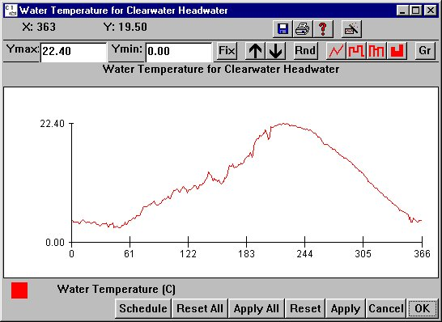

Headwater Temperature
Selecting a Headwater from Reservoir Headwater Temperature opens a window for setting water temperature for the selected headwater. Headwater temperature is specified on a daily basis. Daily water temperature at a headwater is read in to COMPASS as input from the Yearly Input Data File (
Headwater Temperature opens a window for setting water temperature for the selected headwater. Headwater temperature is specified on a daily basis. Daily water temperature at a headwater is read in to COMPASS as input from the Yearly Input Data File (.dat). This window can be opened by right-clicking on a headwater on the River Map (unless you reconfigure the Mouse Tool).
This is an Editable Graph window.

Headwater Temperature for Clearwater Headwater